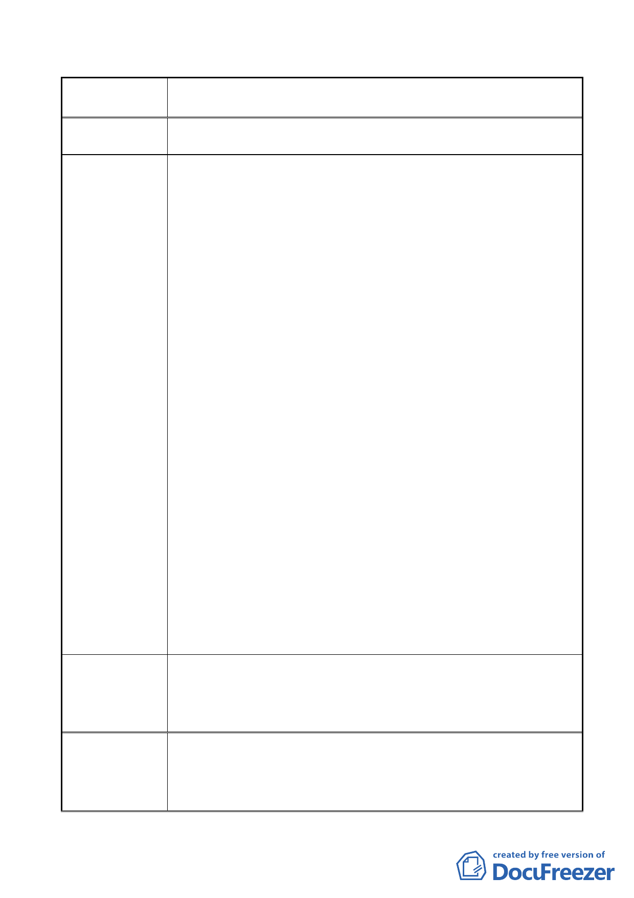

案名
變更臺北市內湖區石潭段四小段 280、281、281-1 地號等三筆
土地國中、國小用地為體育場用地及道路用地主要計畫案
陳情地點
陳情理由
建議辦法
市府回應說明
1.這一塊國中、國小用地，台北市政府教育局是經過如何的決
策程序，決定此地區居民不需要國中、國小？是否有調查本
里近幾年來里民或新遷入家庭成長的數字?
本人曾就此問題請教里長，得到的回覆是近年來因「少
子化」，學校設校的需求減少，故有此變更案的產生。對於這
一點我有很深的感觸及質疑，本里屬於新開發的地區，據我
自己的觀察，本里新建的房屋及新遷入的人口是與日俱增；
即便全國或是全市其他區是屬於少子化的變化過程，此地區
的人口結構肯定不是「少子化」。本人即是 100 年 6 月遷入此
區居住的年輕家庭。我們年輕夫妻就是因為買不起精華區地
房子，因此才買在此機能較差的新開發區（內湖四期重劃
區），但市府卻要將此區早已規劃的國中、小學預定地變更為
體育地，如此以後我的小孩可能要走很遠的路才能到達附近
國小就學，十分的不方便，且對學童上學的過程不安全。此
都市計畫變更更會深深的影響此地區未來都市發展的走向，
務必謹慎決定之。
寶湖里目前並無國中、小學；此地既然為預定地且此地
人口成長有國中、小學需求，都市計畫發展局為何要選擇變
更此地為其他用途呢?
2.要請問體育處，未來若變更為體育用地，詳細的規劃內容為
何? 除了網球場是否有規劃相關的其他體育設施場地，以達
到最佳的使用效益及與社區居民生活能結合。
台北市是否真的需要如此大的一片網球場館，以後預期
使用的效益如何？一年會有幾場需要如此大型的網球場地的
網球比賽呢？若未能做好效益評估，恐怕以後會是一個閒置
的蚊子館。
綜合以上兩點疑問，在還未獲得解答時，本人身為台北
市市民及寶湖里居民強烈反對此項變更案。（變更臺北市內湖
區石潭段四小段 280、281、281-1 地號等三筆土地國中、國
小用地為體育場用地及道路用地主要計畫案）
1.無設校需求說明：
（1）寶湖國中部分：內湖區國小預估入學總人數尚未超過該區
就學國中總容納人數。可知內湖區目前國中規模可滿足
未來 3 年國中就學人口需求。寶湖國中預定地鄰近 1.5 公
- 25 -